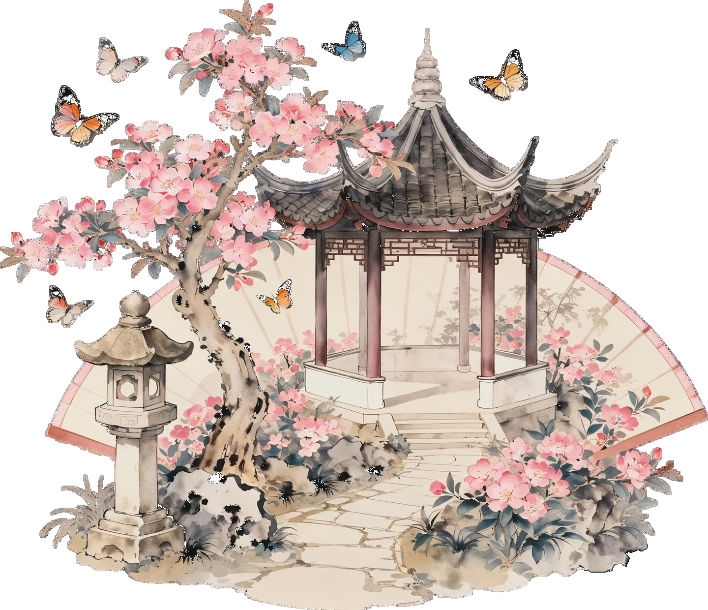
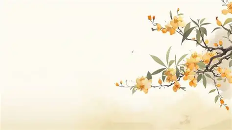

01 From a Path to a Garden
In 2025, NAU-CHINA launched Into China, Into iGEM (ICII) under the theme "The Modern Synthetic Biology Silk Road," inviting 14 iGEM teams from 11 cities to participate together. The projects, regional cultures, and scientific stories unfolded along the map, making the ancient exchange route a new bond connecting traditional wisdom with modern synthetic biology.
In 2026, we hope to carry this connection further. A path allows people far apart to reach one another, while a garden allows those who arrive to truly meet: they linger in different spaces, observe, exchange experiences, and together transform the landscape before them. Therefore, this year's ICII is no longer just a project showcase, but a "Garden of Convergence" jointly built and continuously growing by different teams.

02 What Is ICII?
ICII stands for Into China, Into iGEM. It is both an invitation to approach Chinese culture and the iGEM community, and a collaboration platform that crosses regional, linguistic, and disciplinary boundaries. We invite iGEM teams from different countries and regions to retell their synthetic biology projects from a cultural starting point, and to find connections among each other's scientific questions, technical modules, social issues, and educational practices.
Here, culture is not an ornament outside of science, but a language for understanding complex technology; projects are not isolated exhibits, but open questions that can be responded to, borrowed from, and jointly refined.

03 Why a Chinese Garden?
A Chinese garden never establishes order through completely enclosed spaces. Courtyards divide functions, lattice windows preserve sightlines, corridors connect paths, and water systems convey change. It emphasizes "separated yet connected, bounded yet not closed": each scene has its own boundary, yet always relates to its surroundings; with every step the visitor takes, the scenery before them changes accordingly.
This spatial wisdom corresponds ingeniously to the liquid-liquid phase separation studied by CellApp. Biomolecules can gather into condensates with specific functions without membrane structures; different condensates remain relatively independent while exchanging matter and information with their surroundings; signals such as light, temperature, and pH can also alter their formation, dissociation, and function. The garden thus not only provides a visual theme, but also offers an intuitive language for understanding "bounded yet wall-less" cellular compartments.

04 Science in the Garden
Courtyard: Bounded Yet Wall-less Functional Space
A courtyard forms order through boundaries, yet does not completely isolate the interior from the outside. It corresponds to membraneless compartmentalization: specific molecules become locally enriched within a cell, improving the organization and efficiency of reactions while retaining the capacity for exchange.
Pavilions: Mutually Orthogonal Functional Modules
Different pavilions each have their own purpose and style, neither replacing nor interfering with one another. They correspond to the orthogonal condensates in CellApp that undertake different tasks, enabling multiple functions to run in parallel within the same cell.
Lattice Windows: Information Exchange Across Boundaries
A lattice window both defines a space and brings another scene into view. It symbolizes observation, questioning, and inspiration between teams, and also corresponds to the selective exchange of matter and information between condensates and their surroundings.
Corridors: Continuously Unfolding Paths of Collaboration
Corridors connect scattered spaces, turning a single encounter into a path that can be continued. They correspond to team matching, question exchange, module discussion, and joint creation in ICII.
Four Seasons: Dynamic Changes in Response to the Environment
A garden changes with light, temperature, and season. CellApp likewise uses signals such as light, temperature, and pH to regulate the assembly and disassembly of condensates, allowing functional spaces within the cell to form, disappear, or recombine as needed.

05 What Kind of Garden Do We Want to Build?
We envision a shared space that does not flatten differences. Each team can retain its own regional culture, project language, and research focus, while collaboration allows these differences to generate new value. ICII 2026 hopes to achieve three things: to help the public understand synthetic biology through cultural imagery, to let teams observe one another and discover new possibilities, and to let a single exchange ultimately leave behind shared outcomes that can continue to be used.
- Let culture become an entry point for understanding science, not an added label.
- Let every team be seen, and also see others.
- Let the platform continue to expand, preserving new entry points for future teams.